Student Resource Center
University of Southern Mississippi, Gulf Park
Long Beach, Mississippi
The design for the new Student Resource Center building embodies a rich and inclusive university identity and provides a place for collaboration, academic/career services, and study/lounge space for University of Southern Mississippi Gulf Park students. The new building aims to communicate a transparent and open character through a fresh interpretation of the traditional materials and forms currently found on campus. Individual elements of the building express a different campus character and are composed as an open and inclusive community within the design. By reinterpreting these materials into a unified whole, the building respects the tradition of the existing campus while looking toward the future.
Winner 2017 AIA Mississippi Citation Award
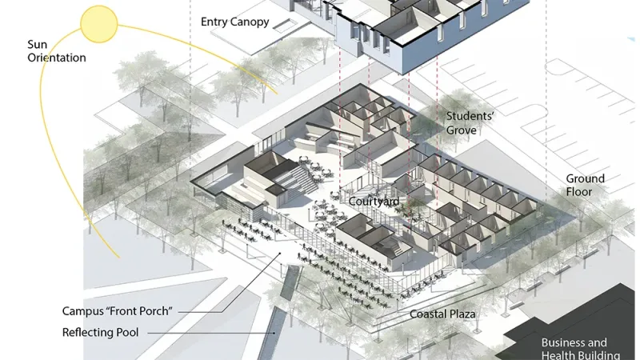
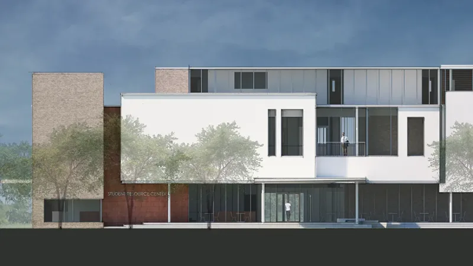
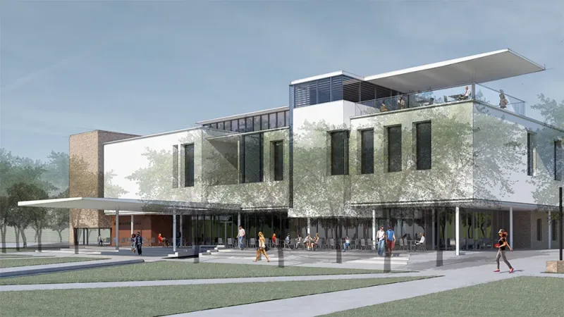
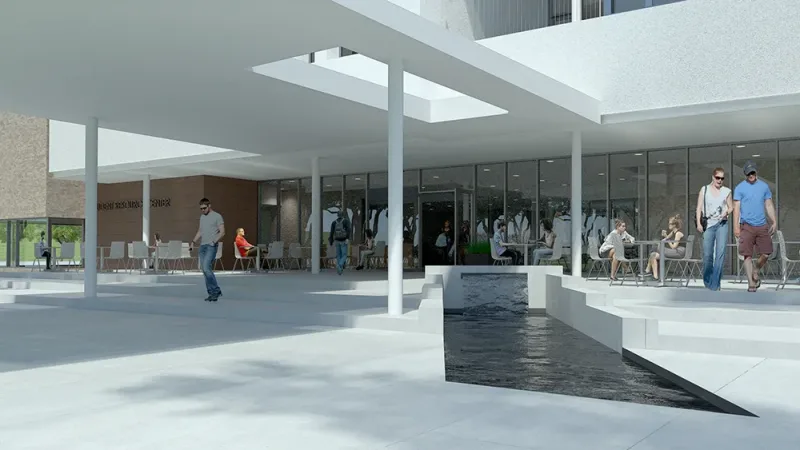
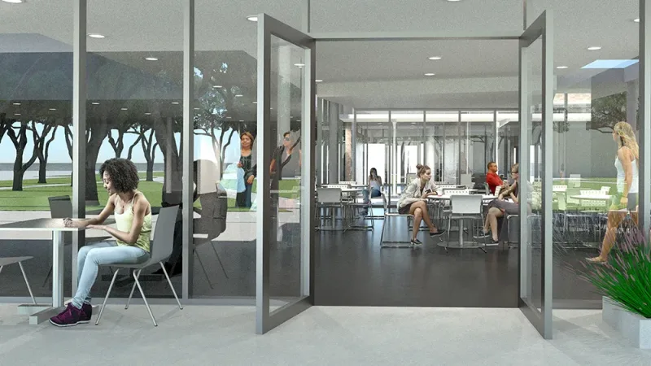
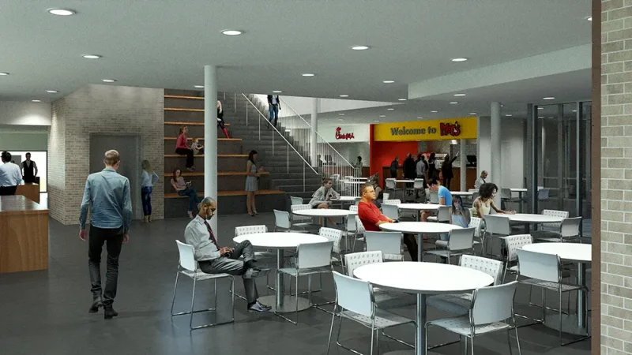
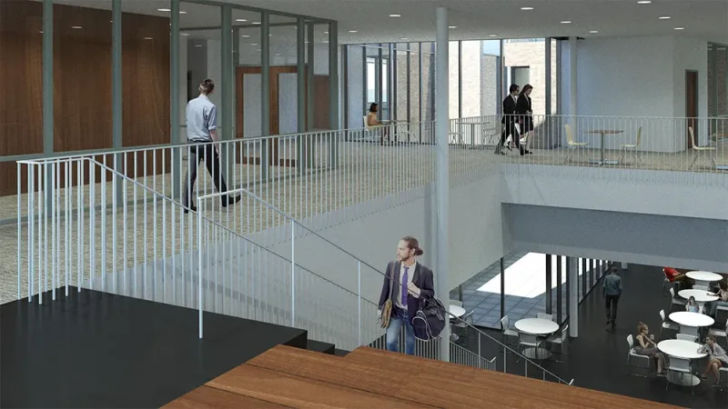
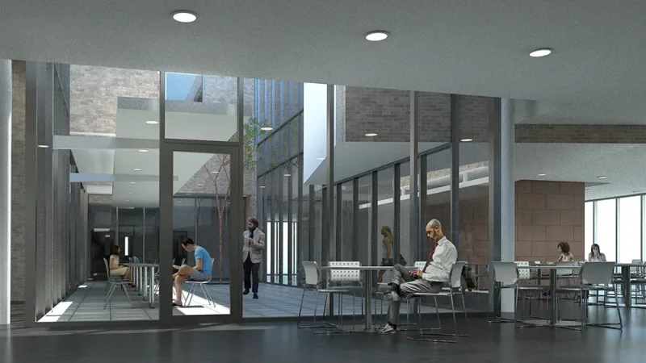
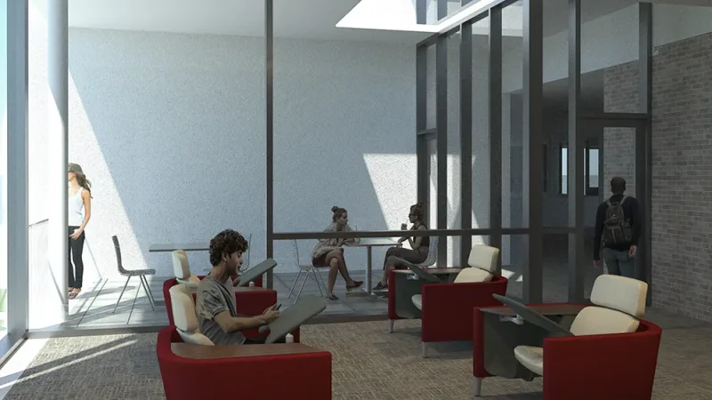
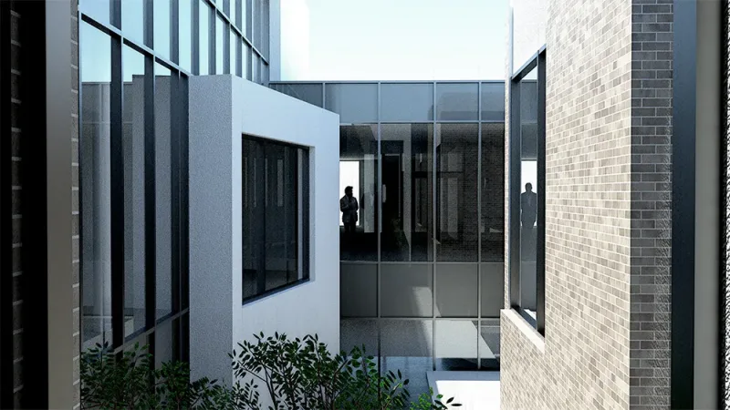
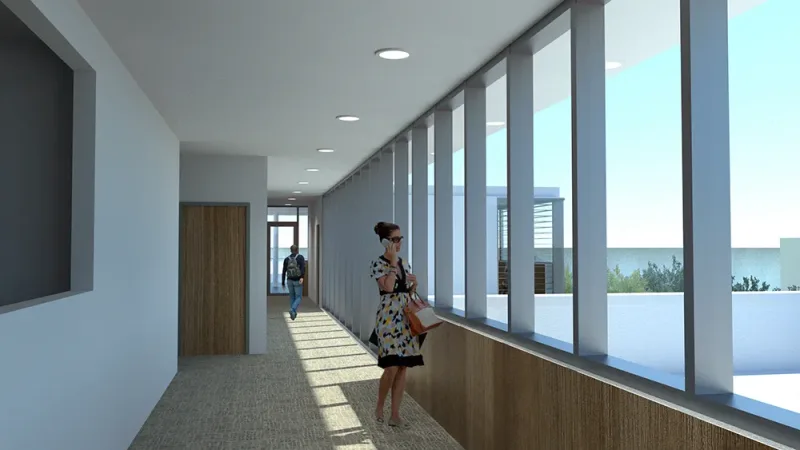
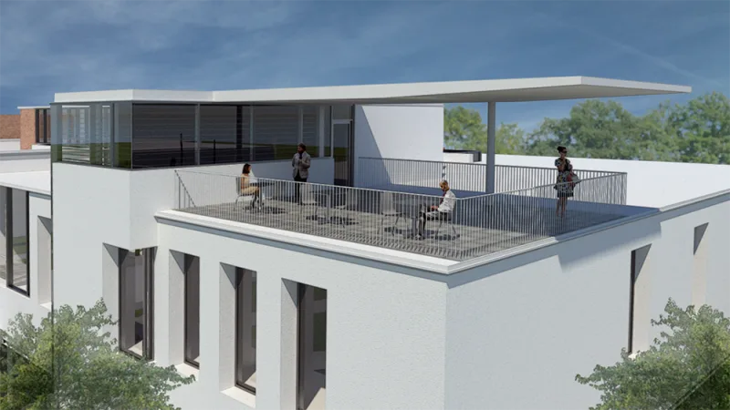